S8 브랜드 · 2026-10-01 · 전부 Pillow로 직접 그렸다(생성 AI 이미지 없음) ·
생성기 tools/gen_logo.py
REF_ART_FLAT_FOLK.md §5. 청록~남색은 물에만 썼다.주력. 넷을 같은 조건으로 비교한다.
바코드가 위에서는 칼같이 서 있다가, 아래로 내려가며 벌어지고 흐려져 수심의 지층이 된다. 맨 아래 막대들 사이에 아주 작은 등불 하나. 게임의 두 축(현실의 바코드 / 깊은 바다)이 설명 없이 한 그림에 묶인다.
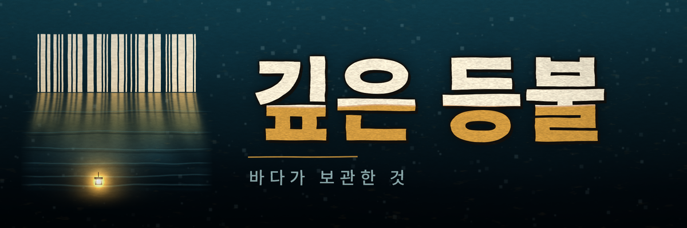
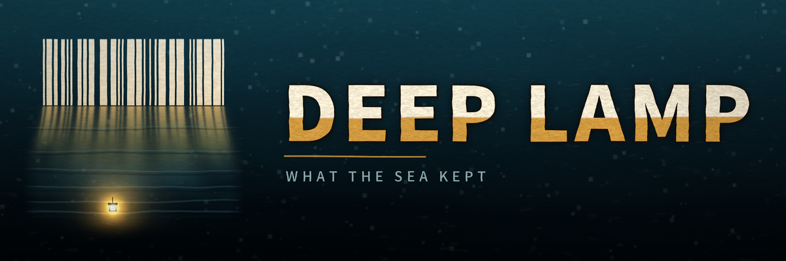
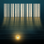
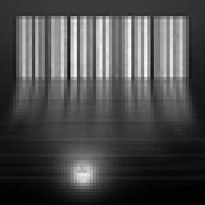
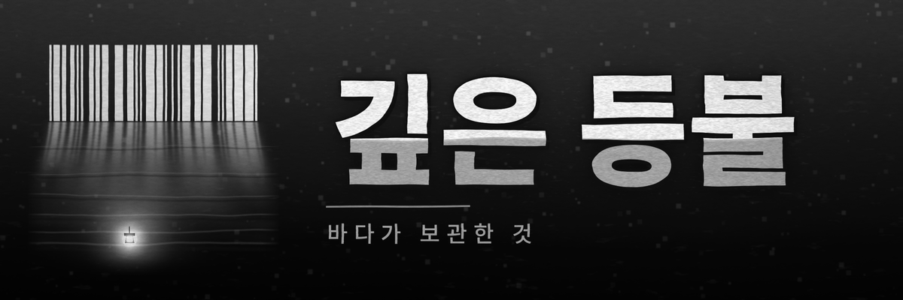
등불의 유리가 그대로 유리돔이고, 그 안에 방 세 칸과 사람. 방마다 색이 다르다 (호박·탁한 올리브·적동 — 게임의 D1 규칙 그대로). 바깥은 검정.
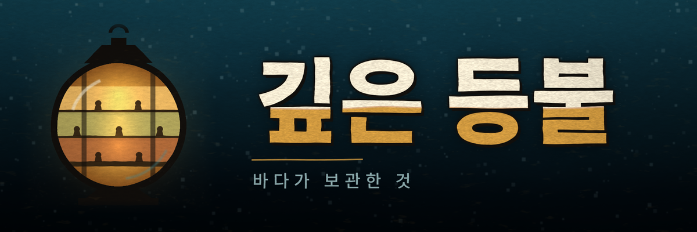
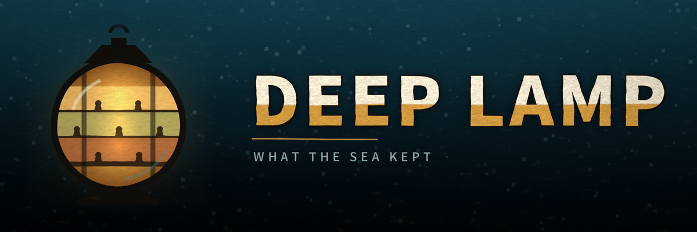
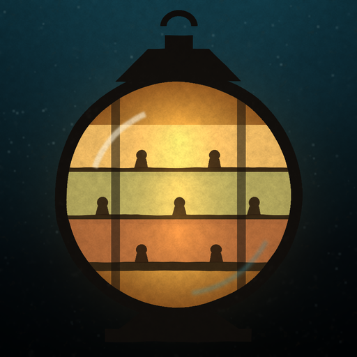
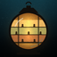
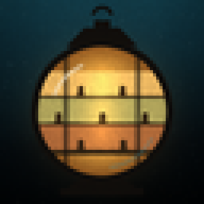
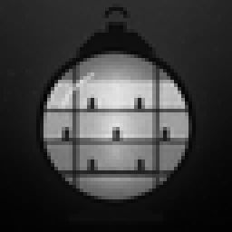
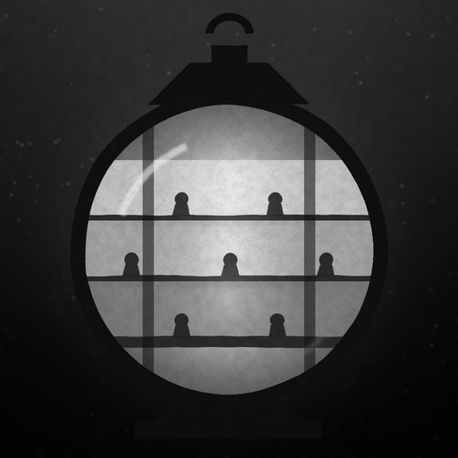
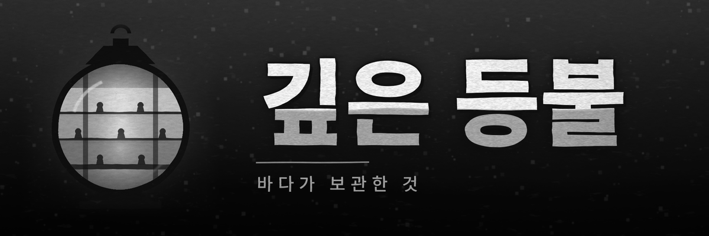
위에 돔, 아래로 가늘어지는 기둥, 층마다 방과 불빛. 맨 아래는 검정에 삼켜진다.
게임 화면(section_warm.png)의 실루엣을 그대로 가져왔다. 성장 방향이 아래라는
구조를 그림이 말한다.
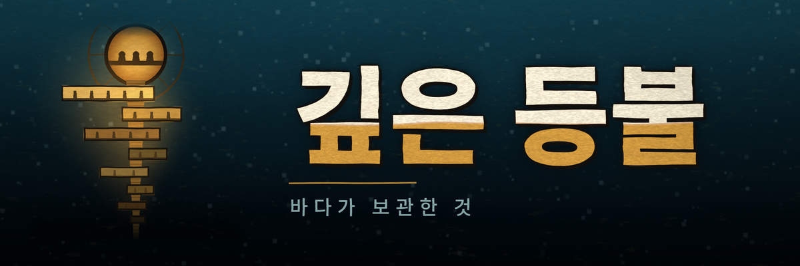
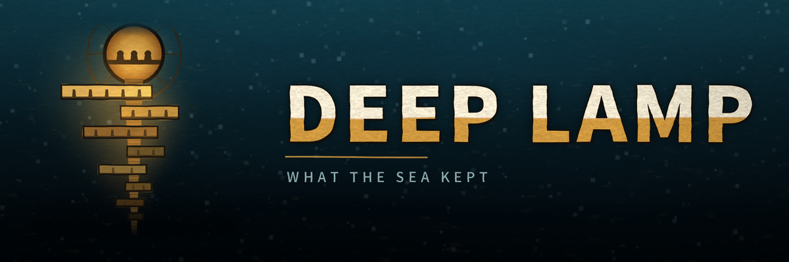
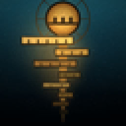
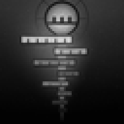
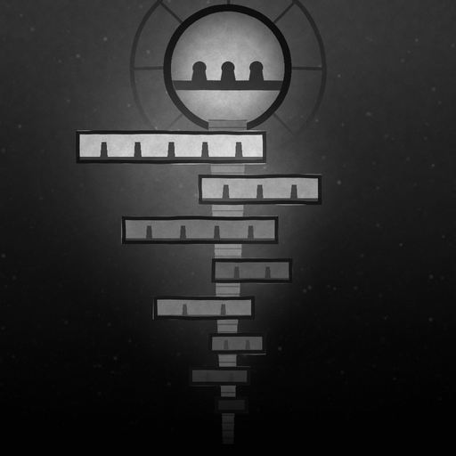
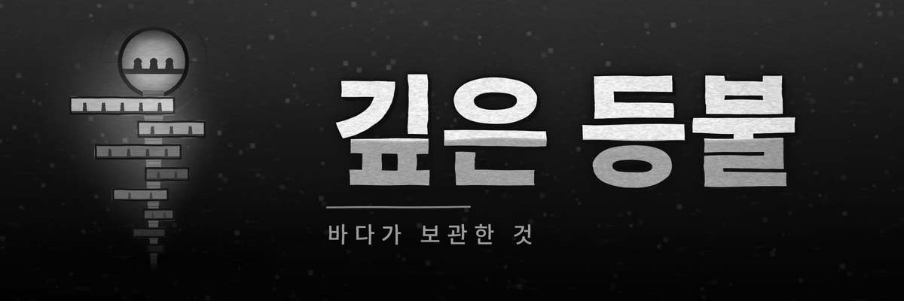
제목 글자의 아랫부분이 물에 잠겨 굴절로 흔들린다. 잠긴 부분은 청록, 나온 부분은 크림·황토. 그림 없이 글자만으로 성립한다.
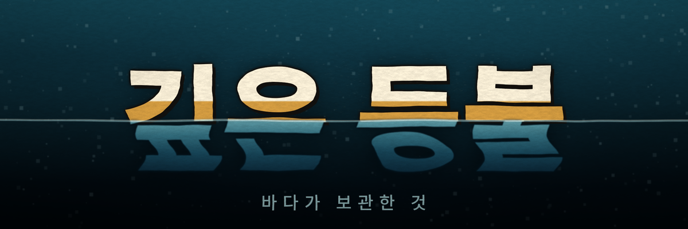
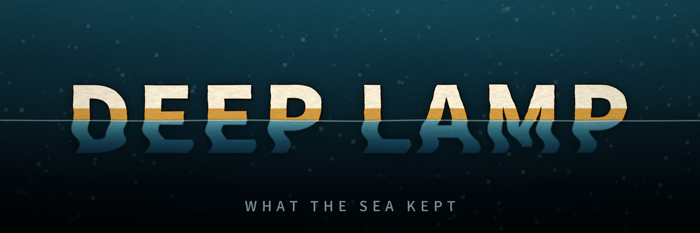
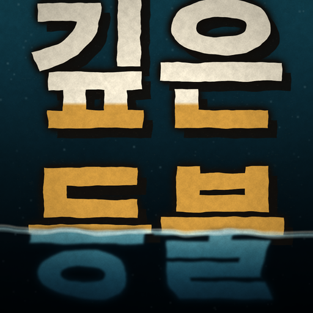
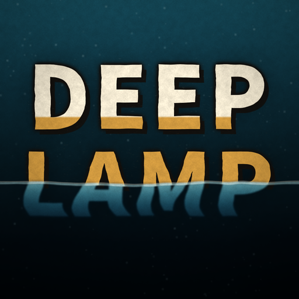
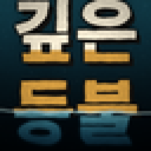
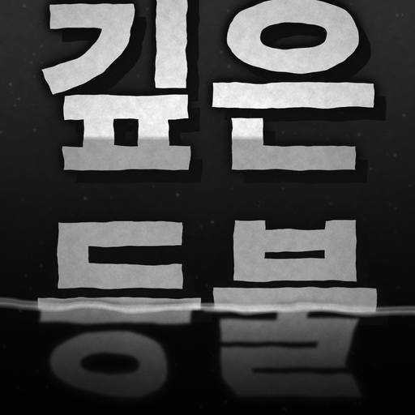
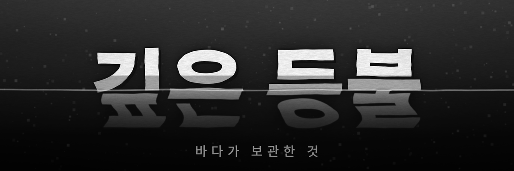
통과 조건 1번. 작은 쪽이 실제 크기, 큰 쪽이 같은 이미지를 픽셀 그대로 확대한 것.
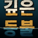
통과 조건 3번. 실제 1막 화면 art/deep/section_warm.png 위에 얹었다.
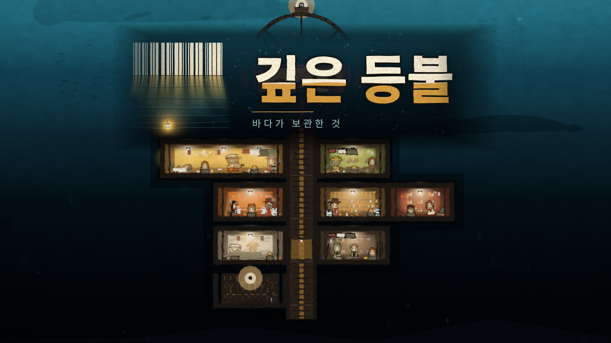
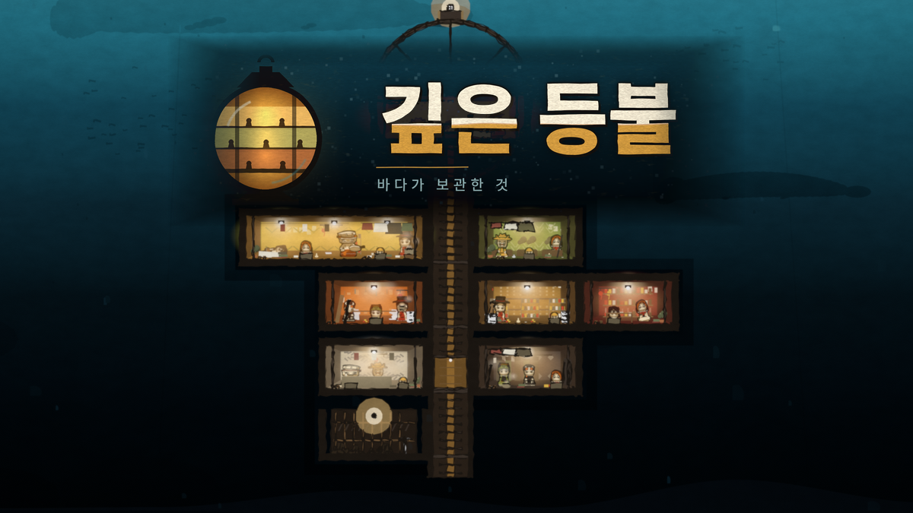
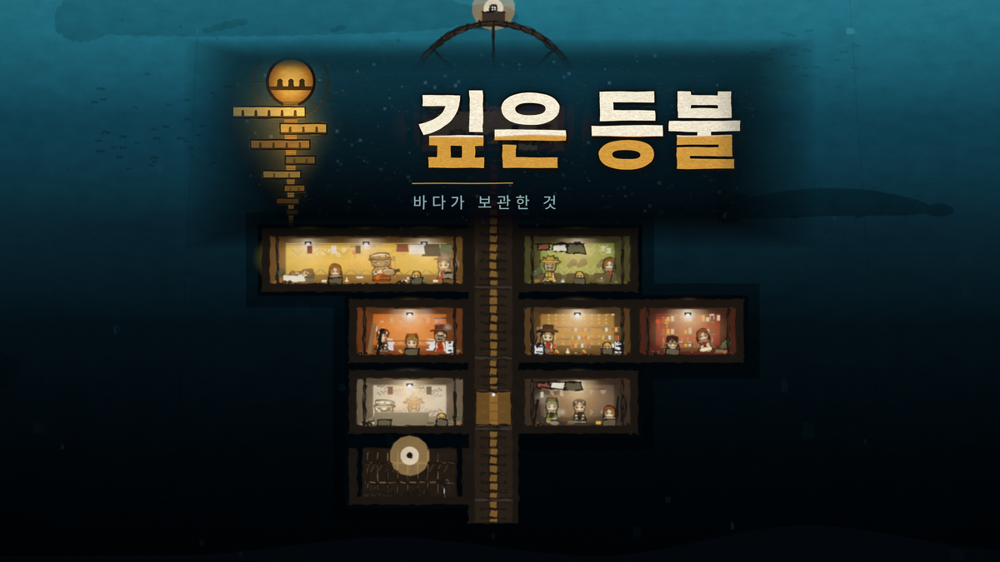
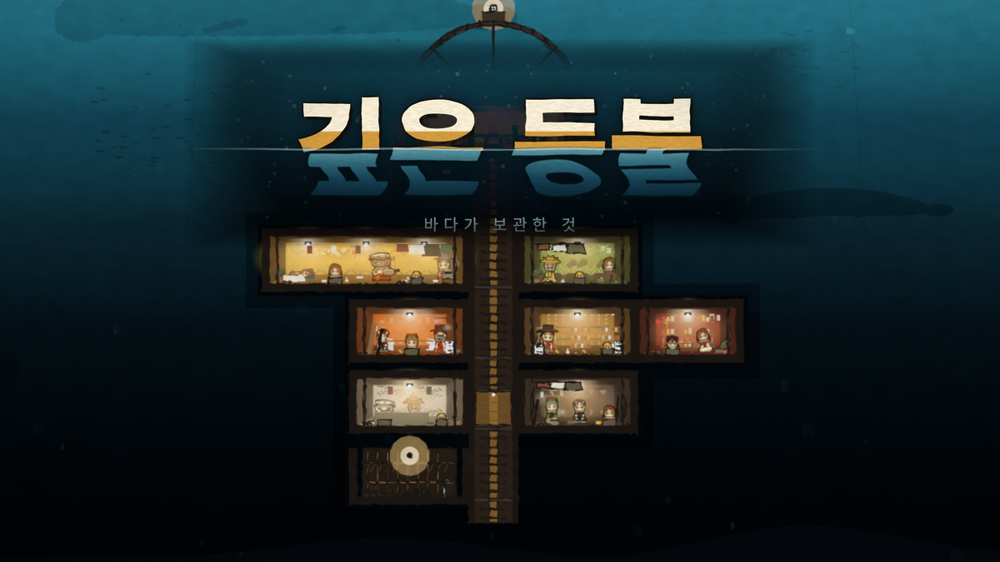
| 조건 | L1 성문→수심선 | L2 등불=돔 | L3 척추 | L4 잠긴 글자 |
|---|---|---|---|---|
| ① 64px에서 읽힌다 | 통과 — 바코드 블록과 등불 점이 남는다 | 통과 (최강) — 등불로 즉시 읽힌다 | 조건부 — "빛나는 구조물"로는 읽히나 무엇인지는 흐리다 | 한글 탈락 / 영문만 조건부 |
| ② 흑백에서 형체가 남는다 | 통과 — 바코드가 오히려 더 또렷하다 | 통과 — 원형 실루엣 | 통과 — 탑 실루엣 | 조건부 — 잠긴 쪽이 중간 회색으로 뭉친다 |
| ③ 가로형·정사각 둘 다 | 통과 | 통과 | 통과 | 가로형은 강하고 정사각은 약하다 |
| ④ 어두운 배경이 기본 | 통과 — 배경이 곧 작품 | 통과 | 통과 | 통과 |
| ⑤ 한글·영문 두 벌 | 통과 — 마크는 언어 중립 | 통과 — 마크는 언어 중립 | 통과 — 마크는 언어 중립 | 통과하되 두 벌을 따로 관리해야 한다 |
| 게임 훅(바코드)을 말하나 | 직접 말한다 | 말하지 않는다 | 말하지 않는다 | 말하지 않는다 |
| "아래로 자란다"를 말하나 | 말한다 | 말하지 않는다 | 가장 직접적으로 말한다 | 은유로만 |
| 따뜻함(들어가 앉고 싶다) | 등불 하나로만 — 차갑고 쓸쓸하다 | 가장 따뜻하다 | 따뜻하다 | 거의 없다 |
마크를 고정하고 제목만 바꿨다. 같은 그림인데 게임이 달라 보인다.
T1 「깊은 등불」 — 따뜻하고 조용하다. 그림과 제목이 같은 말을 한다(등불). 네 글자라 로고로 가장 다루기 쉽다.
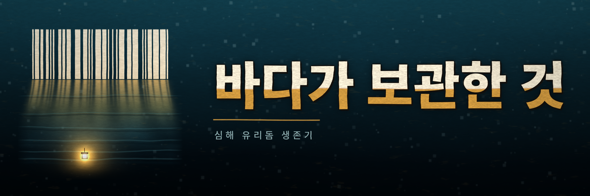
T2 「바다가 보관한 것」 — 서사가 가장 두껍다. 길어서 가로형에서만 산다. 부제로 쓸 때 가장 좋다.
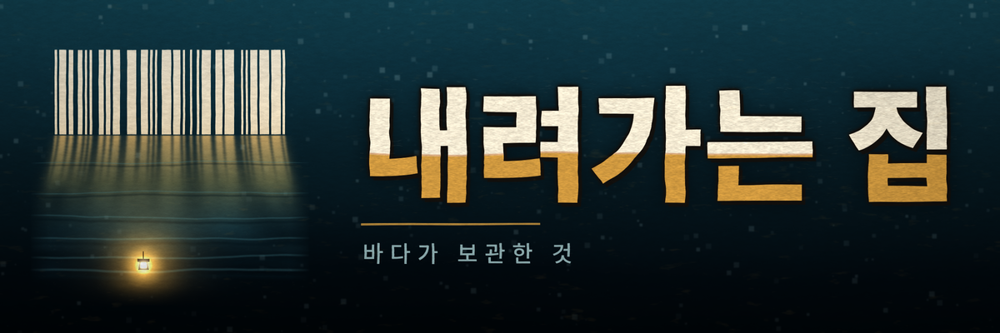
T3 「내려가는 집」 — 구조를 말한다. 마크의 하강과 제목이 겹쳐 메시지가 가장 또렷해진다. 다만 따뜻함은 '집'이라는 단어 하나에 기댄다.
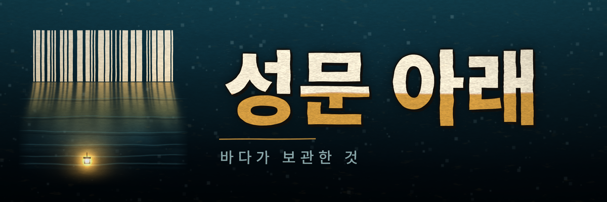
T4 「성문 아래」 — 마크와 가장 잘 맞는다. 그림의 바코드가 '성문'을 바로 설명해 주어, T4의 약점(뜻이 안 열린다)을 마크가 메운다. 대신 처음 보는 사람에게는 여전히 수수께끼다.
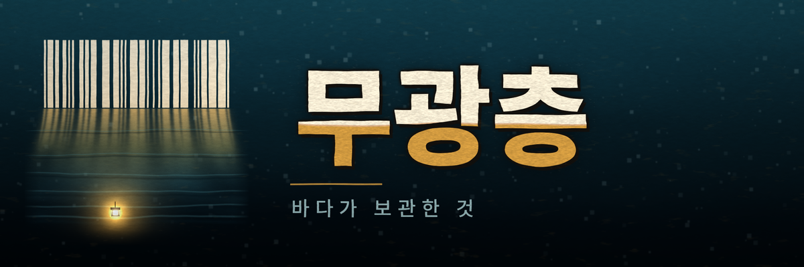
T5 「무광층」 — 가장 차갑고 가장 장르적이다. 세 글자라 로고로는 가장 단단하지만 "들어가 앉고 싶은" 느낌이 사라진다.
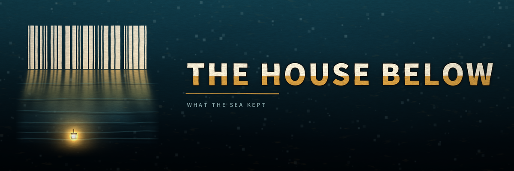
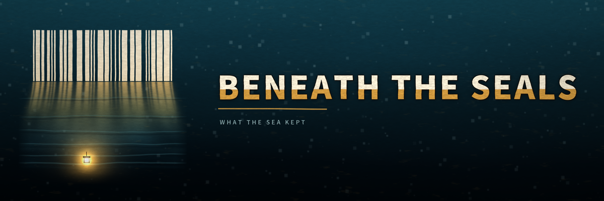
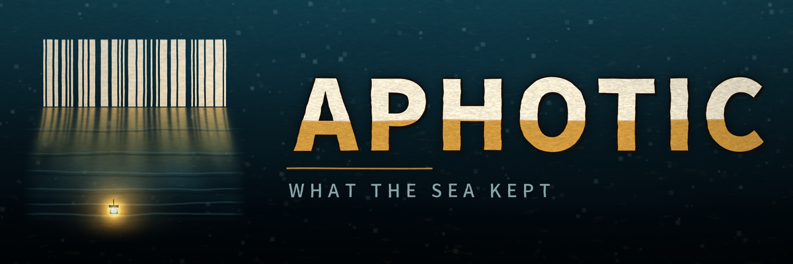
docs/reports/brand_S8.md.
폰트: Noto Sans KR (SIL Open Font License 1.1) — 상업 이용·수정·재배포 가능.
한글과 라틴을 한 가족으로 써서 두 언어판이 형제로 보인다. 그 밖의 형태(바코드·등불·돔·사람·
수면)는 전부 도형으로 직접 그렸다. 생성 AI 이미지는 쓰지 않았다.
재생성: python tools/gen_logo.py